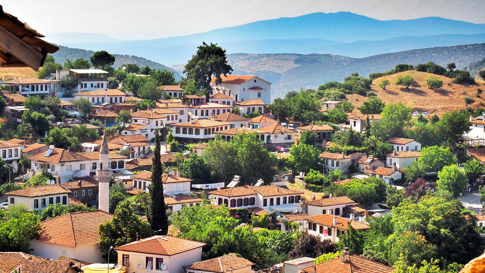

ÜYE OL
GİRİŞ YAP
...
ŞİRİNCE
Şirince, 2012’deki Maya Takvimi’nden doğan kıyamet senaryolarına, “Dünyanın sonu gelecekse gelsin, bizim kafamız rahat, şarabımızı koyduk bekliyoruz” derken, diğer yandan dünyayı tehdit eden gerçek kıyamet cehalet ve kapalı fikirlilikle Matematik Köyü ve Tiyatro Medresesi gibi oluşumları ile kılıç kalkan savaşan, içi ayrı, dışı ayrı güzel köy.
Biz kafa dinlemek istediğimizde sakin ama bir yandan da hareketli yerleri tercih ederiz. Öyle bomboş sokaklar, aşırı dinginlik bizim pilleri dolduracağına emer bitirir. Eğer siz de bizim gibiyseniz, Şirince’nin oya gibi tarihi dokusu, trafiğe kapalı sokakları, tezgah başında dikiş nakış satan güleç şalvarlı teyzeleri, insanın reset düğmesine basan şarapları, size de iyi gelebilir gelebilir. Ufak bir dopinge ihtiyacı olanlar için Şirince’de gezilecek yerleri yazdık.
Genelde turlar Şirince ziyaretini, ikisi de Selçuk’ta olduğu için, sabahtan Efes, öğlededen sonra da Şirince olarak planlıyor. Yarım gün muhteşem restore edilmiş sokaklarını görmek, teyzelerin taze çiçeklerden elleriyle ördükleri taçları sattıkları tezgahlarını gezmek, fotoğraf çılgınlığına kapılmak için gayet yeterli bir zaman.
Şirince’yi Şirince yapan ve son yıllarda turistik destinasyonlar arasından ismini ön plana çıkaran şey meşhur şarapları. Özellikle çeşit çeşit meyveli şarapları: elma, çilek, muz, şeftali, kavun… Bizce biraz fazla tatlı olmakla birlikte envai çeşit meyvenin ev yapımı şarabını burada bulabiliyor isterseniz şarapevlerinde tadım yapabiliyorsunuz. Bununla birlikte sommelierler (şarap eksperleri) genelde meyve şaraplarına burun kıvırırlar, onu da belirtmeden olmaz. Ama seven de deli seviyor arkadaş. Şişe şişe alanları da göreceksiniz.
Merkezindeki envai çeşit ev yapımı sabun, el işleri, zeytinyağı ürünleri satılan köy pazarı, şarapevleri ve Arnavut kaldırmlı sokaklarındaki tarihi Rum evleri görülmesi gereken yerlerden. Ayrıca köyün kuzeyindeki Hodri Meydan Kulesi‘nden köy manzarası da bir harika.
Şirince’nin meyve şarabı çok meşhur. Buraya gelmişken köyün merkezindeki mahzenlerde şarap tadımı ve alışverişi yapabilirsiniz. Genellikle Şirince’ye gelen insanlar meyve şaraplarına bayılıyor ama bizim gibi klasik üzüm şarabı sevenlerdenseniz size hitap etmeyebilir. Mahzen olarak buranın en eskisi, Aziz John Baptist Kilisesi’nin tarihi mahzeni ama bütün diğer şarapevleri merkezde toplanmış. Bazıları restoranların bazıları ise butik otellerin mahzenleri. (Artemis Şarap Evi, Kıvırcık Şarap Evi, Eski Sinema Şarap Evi tadım yapabileceğiniz şarap evlerinden bazıları.
TUR PROGRAMLARI ve ARAÇ KİRALAMA seçenekleri için tıklayınız...
YOL DURUMU
HAVA DURUMU